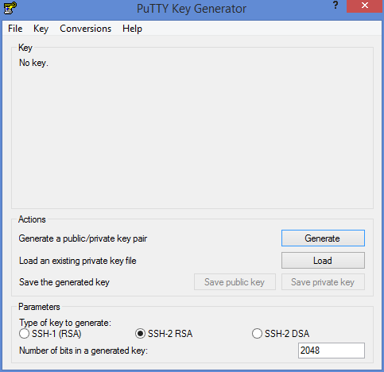
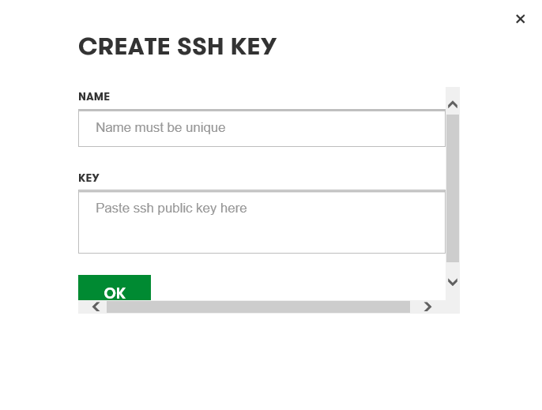
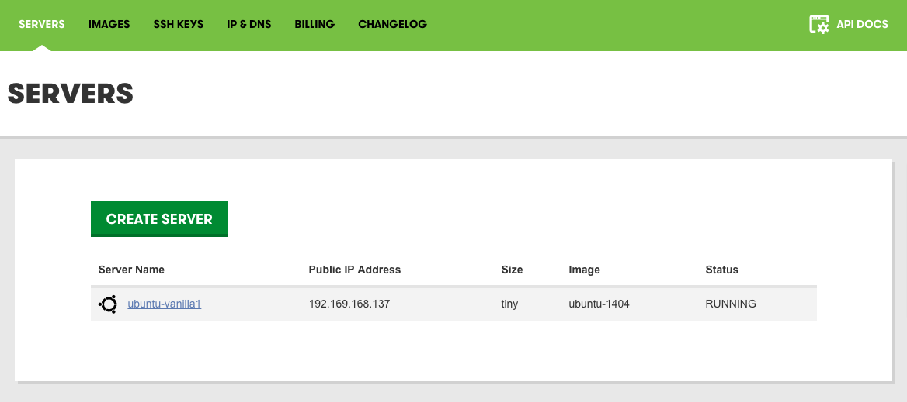
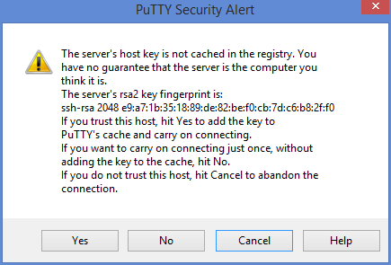

Configure a COMPANY_NAME server to use SSH authentication, create public and private keys with PuTTYGen, and configure PuTTY to connect to a COMPANY_NAME server
Use SSH Keys with PuTTY
Difficulty: 2
Time: 30 minutes
This article is for Windows users.
Using SSH keys for server logins is more secure and saves time. In this article, you'll do the following:
- Generate public and private SSH key pairs with PuTTY
- Load the public SSH keys into the COMPANY_NAME portal
- Create a new server
- Create a PuTTY profile
- Connect to the new server using PuTTY
This article assumes that you have downloaded putty.exe and puttygen.exe.
Generate public and private SSH key pair
- Start PuTTYgen.

- Click Generate.
- Move the mouse within the blank area under Key to generate some randomness until the progress bar is full.
Once your key is generated, it'll appear in top the field under Public key for pasting into OpenSSH authorized_keys file. This is your public key. A properly formatted public key starts with ssh-rss AAAA.
- Enter a passphrase in Key passphrase.
- Re-enter the passphrase in Confirm passphrase.
- Click Save private key, and then choose a name and location to save your private key file.
- Right-click in the field under Public key for pasting into OpenSSH authorized_keys file, and choose Select All.
- Right-click again in the field, and choose Copy.
Load the public SSH key
In this example, we'll get the key from the COMPANY_NAME panel.
- Go to the SSH key page in the COMPANY_NAME panel - https://cloud.godaddy.com/keys.
- Click Create Key. The Create SSH Key window opens.

- Enter a unique name that identifies the SSH key you created in the previous step.
- Paste the contents (copied in the previous section) in the Key field.
- Click OK. A Success message displays.
Create a new server
- In the COMPANY_NAME panel, click Servers.
- Click Create Server.
- Give a unique name to your server, and choose a size and base image.
- Enter a username. This username should be different from your main COMPANY_NAME account name.
- In the Password field, choose Connect through SSH instead.
- From the drop-down list, select the SSH key created in the previous step.
- Click Finish.
Create a new PuTTY profile
- Start PuTTY.
- In the Host Name (or IP Address) field, enter the Public IP Address of the server created in the COMPANY_NAME Cloud Servers panel.

- In the Port field, enter "22".
- On the left, select the Data subcategory under Connection.
- Under Login details, in the Auto-login username field, enter the username created in the previous section.
- On the left, under the Connection category, expand SSH, then click Auth.
- Make sure that Bypass authetication entirely (the first option) is NOT checked.
- On the right, click Browse under Private key file for authentication.
- Browse for the private key file created in the previous step and select it.
- On the left, click the Session category (at the top).
- Enter a name for the session profile under Saved Sessions, such as My Ubuntu Server.
- Click Save.
Connect using your PuTTY profile
- Start PuTTY.
- Under Saved Sessions, select the profile you'd created in the last section.
- Click Load.
- Click Open.
- In the PuTTY Security Alert dialog box, click Yes.

- When prompted, enter the passphrase used when generating your SSH key.
You are now connected to your server.
Conclusion
Congratulations! In this article, you generated public and private SSH key pairs with PuTTY, loaded your public SSH key into the COMPANY_NAME portal, created a new server, created a new PuTTY profile, and connected to your new server using PuTTY.